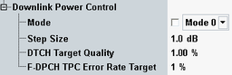

Downlink Power Control Settings
This section configures the conditions for the downlink power control tests.

Downlink power control settings
Enable or disables power control in downlink and selects the frequency of the power adjustment of the DL DPCH in response to the UE transmitted TPC commands.
- 0: downlink power is adjusted in every slot
- 1: the TPC commands are estimated over three slots and the DL power is adjusted in every three slots
Specifies the step of power adjustment in downlink DPCH after the R&S CMW has received a TP command.
Remote command:Specifies the signaled target link quality at the UE, expressed as a target BLER.
Remote command:Specifies the signaled target link quality at the UE for tests using the fractional DPCH (F-DPCH).
Remote command: